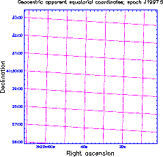
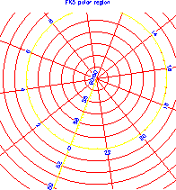
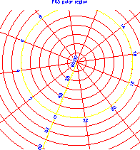
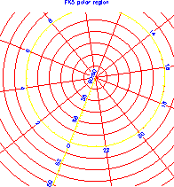
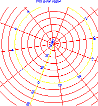
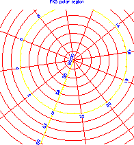

PyAST - A Python Interface to the starlink AST library


D.S. Berry & T. Jenness
18th October 2011
Version 1.0
Contents
Introduction
What is PyAST?
What is AST?
About this document
Requirements
Obtaining and installing PyAST
Using PyAST
PyAST License
Notes on individual classes
Channel
FitsChan
Frame
KeyMap
Plot
Examples
High level functions
 


